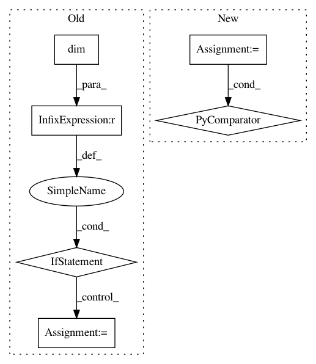

5f6c9b8ca29b56ab2d2e1acfc38ea61001b92c4b,allennlp/common/testing/model_test_case.py,ModelTestCase,ensure_batch_predictions_are_consistent,#ModelTestCase#,147
Before Change
// elements in the batched case. Fixing this in general is complicated;
// we"ll just fix some easy cases that we actually have, for now.
num_tokens = single_predicted.size(0)
if batch_predicted.dim() == 1:
batch_predicted = batch_predicted[:num_tokens]
elif batch_predicted.dim() == 2:
batch_predicted = batch_predicted[:num_tokens, :]
else:
raise NotImplementedError
assert_allclose(single_predicted.data.numpy(),
batch_predicted.data.numpy(),
atol=tolerance,
err_msg=key)
After Change
batch_predicted = batch_predictions[key][i]
if isinstance(single_predicted, torch.autograd.Variable):
if single_predicted.size() != batch_predicted.size():
slices = tuple(slice(0, size) for size in single_predicted.size())
batch_predicted = batch_predicted[slices]
assert_allclose(single_predicted.data.numpy(),
batch_predicted.data.numpy(),
In pattern: SUPERPATTERN
Frequency: 3
Non-data size: 6
Instances
Project Name: allenai/allennlp
Commit Name: 5f6c9b8ca29b56ab2d2e1acfc38ea61001b92c4b
Time: 2018-02-07
Author: mattg@allenai.org
File Name: allennlp/common/testing/model_test_case.py
Class Name: ModelTestCase
Method Name: ensure_batch_predictions_are_consistent
Project Name: stanford-mast/nn_dataflow
Commit Name: ef4353bd24b9d781c2dfa9cd2146d9b87e63b6f1
Time: 2017-05-01
Author: mgao12@stanford.edu
File Name: nn_dataflow/Scheduling.py
Class Name: Scheduling
Method Name: schedule_search
Project Name: pytorch/fairseq
Commit Name: de977736f91d23c53e6a60c45822973a615daa15
Time: 2020-11-02
Author: shajain@fb.com
File Name: fairseq/models/bart/hub_interface.py
Class Name: BARTHubInterface
Method Name: fill_mask